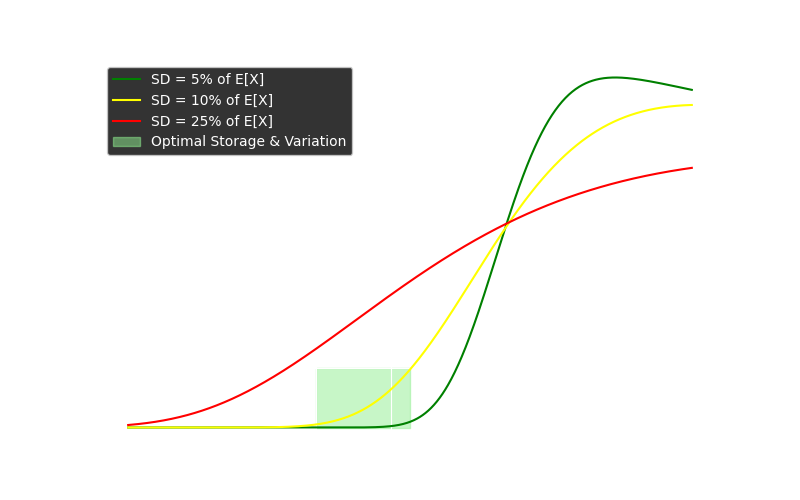
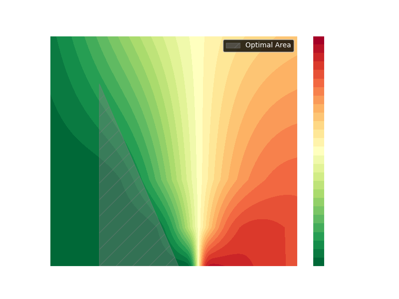

Planung & Optimierung¶
Schritt-für-Schritt-Planungsablauf¶
Primärbedarf ermitteln:¶
- Einlesen der Verkaufsaufträge und Prognosen.
- Berechnung des Bedarfs an Endprodukten (P1, P2, P3) unter Abzug des vorhandenen Lagerbestands.
Bestandsprüfung:¶
- Abgleich des vorhandenen Lagerbestands (Vorperiode) mit dem Bedarf.
- Festlegung des Soll-Lagerbestands (Sicherheitsbestand).
Berechnung des Sekundärbedarfs¶
- Auswertung der Stücklisten der Endprodukte.
- Ermittlung des Bedarfs an Eigenfertigungsprodukten und Zwischenprodukten.
- Berücksichtigung der Werte der einzelnen Komponenten zur späteren Kostenkalkulation.
Berechnung des Tertiärbedarfs¶
- Ableitung der benötigten Kaufteile aus den Stücklisten der internen Fertigungsprodukte.
- Abgleich mit vorhandenen Beständen und Ermittlung von Bestellmengen unter Berücksichtigung von Lieferzeiten.
Kapazitätsprüfung:¶
- Ermittlung des Gesamt-Kapazitätsbedarfs (Produktionszeit + Rüstzeiten + Rückstände).
- Vergleich mit den verfügbaren Kapazitäten der Arbeitsplätze.
- Falls Engpässe vorliegen: Priorisierung und ggf. Verteilung der Aufträge über mehrere Perioden.
Erstellung der Produktions- und Bestellaufträge:¶
- Festlegung der Produktionsaufträge für Endprodukte sowie für Zwischen- und Eigenfertigungsprodukte.
- Ableiten von Bestellaufträgen für Kaufteile.
- Zusammenführung aller Aufträge und Festschreibung der geplanten Produktion.
Kalkulation und Dokumentation:¶
- Berechnung der Herstellkosten unter Einbeziehung:
- Materialwerte (aus Stücklisten, inkl. Zwischenprodukte)
- Fertigungs- und Rüstzeiten (Arbeits- und Maschinenkosten)
- Lagerhaltungskosten (auf Basis des Lagerwerts)
- Speicherung der geplanten Produktionsaufträge, der Bestellaufträge sowie der erwarteten Lagerbestände als Eingangsgrößen für die nächste Periode.
Datenfluss im Planungsprogramm¶
-
Eingabe:
- Stammdaten: Produktionsstruktur, Stücklisten (mit Mengen und Werten), Kapazitätsdaten, Anfangslagerbestände.
- Periodenspezifische Daten: Verkaufsaufträge, Prognosen, Rückstände, Bestände, offene Fertigungsaufträge.
-
Berechnungsmodul:
- Ermittlung von Primär-, Sekundär- und Tertiärbedarf.
- Kapazitätsplanung (inkl. Rüstzeiten und Überstunden).
- Kostenkalkulation (Materialwerte, Produktionszeiten, Lagerhaltung).
-
Ausgabe:
- Produktionsplan: Welche Endprodukte, Zwischenprodukte und Eigenfertigungsprodukte in welcher Menge hergestellt werden.
- Bestellplan: Welche Kaufteile in welcher Menge bestellt werden müssen.
- Aktualisierte Lagerbestände und Kapazitätsauslastungen.
- Kalkulierte Herstellkosten und Vergleich Soll/Ist (über Formularvorlagen).
Vereinfachtes Modell wenn man nur eine Periode planen würde¶
Und man das Lager nicht optimiert;
```mermaid flowchart TD %% Stammdaten (konstant) subgraph "Stammdaten" PRODSTR["Produktionsstruktur"] end
%% Periodendaten (variabel) subgraph "Periodendaten" OPEN_SALES["Offene Aufträge"] SALES["Neue Aufträge"] CURINV["Lagerbestand"] end
%% Berechnungen subgraph "Berechnungen" PRIM["Primärbedarf"] SEK["Sekundärbedarf"] end
%% Ergebnis subgraph "Ergebnis" PRODORD["Produktionsaufträge"] BESTORD["Bestellaufträge"] end
%% Datenfluss SALES --> PRIM OPEN_SALES --> PRIM CURINV --> PRIM PRODSTR --> SEK PRIM --> SEK SEK --> BESTORD SEK --> PRODORD class PRODSTR,TEILDAT,CAPCOST,SALES,OPEN_SALES,CURINV inputData; class PRIM,NET,SEK,TER,PRODORD,BESTORD,NEWINV calcData; class RES resultData; classDef inputData fill: green; classDef calcData fill: blue; classDef resultData fill: yellow;
````
Wichtiges zur Optimierung¶
Lagerkosten:¶
- Lagerkosten sind sprungfix, also muss ich aufpassen nicht über disen Betrag(250 000) zu kommen.
- Ich kann die Lagerkosten nicht genau planen, da es Lieferabweichungen gibt und die Bestellungen zu zufälligen Zeiten eintreffen ?
- Werden die Lagerkosten über die durchschnittlische Lagermenge berechnet? Oder zahle ich die spungfixen Kosten wenn Lager kurze Zeit zu voll ist?
- Risiko dafür berechnen, dass Lager zu voll. Risiko Lagerwert > 250 k. Risiko sollte unter 10% sein;
- Durch Eilbestellungen niedrigeres Risiko, aber höhere Bestellkosten.
- Kaufteile mit größten Abweichungen führen zu höheren Risiken.
- Von Kaufteilen mit langer Lieferzeit mehr im Lager haben. Von Kaufteilen mit hoher Abweichung mehr auf Lager haben.
- Teile welche für mehrere Endprodukte benötigt werden, mehr auf Lager haben.
Lagerkosten Funktion¶

Erwartungswert des Lagerwertes¶
Der Lagerwert kann nicht genau hervorgesagt werden. Es gibt Unsicherheiten in den Bestellungen. Wir definieren den Lagerwert \(X\) als normalverteilte Zufallsvariable mit Erwartungswert \(e\) und Standardabweichung \(sd\).
Aus den genannten Lagerkostenfunktion und der genannten Verteilung des Lagerwertes können wir eine erwartete Kostenwertfunktion \(f(X)\) ableiten. muss der Erwartungswert in zwei Bereiche aufgeteilt werden:
was sich vereinfacht zu:
wobei:
- \(P(X \geq 250\,000)\) die Wahrscheinlichkeit ist, dass der Speicherkapazitätswert den Schwellenwert überschreitet.
- \(E[X \mid X \geq 250\,000]\) und \(E[X \mid X < 250\,000]\) die bedingten Erwartungswerte von \(X\) oberhalb bzw. unterhalb des Schwellenwerts sind.
Berechnung der Wahrscheinlichkeit \(P(X \geq 250\,000)\)¶
Da \(X \sim N(e, sd^2)\), berechnet man:
wobei \(\Phi\) die kumulative Verteilungsfunktion (CDF) der Standardnormalverteilung ist.
Berechnung der beschnittenen Erwartungswerte¶
Mit Hilfe der Eigenschaften der beschnittenen Normalverteilung lassen sich die Erwartungswerte wie folgt ableiten:
wobei:
- \(z = \frac{250\,000 - e}{sd}\)
- \(\phi(z)\) die Dichtefunktion (PDF) der Standardnormalverteilung ist
- \(\Phi(z)\) die kumulative Verteilungsfunktion (CDF) der Standardnormalverteilung darstellt
Berechnung der erwarteten Speicherpreis¶
Setzt man nun alles zusammen:
Lagerkosten Berechnung¶
Für einen erwarteten Lagerwert von \(e\) und einer Standardabweichung von \(sd\) ergibt sich der Erwartungswert der Lagerkosten
wobei $$ z=\frac{250000-e}{sd}\quad\text{und}\quad sd=r\cdot e. $$
Graph für ausgewählte Abweichungen¶

Für ausgewählte Abweichungen \(sd=0.05e\), \(sd=0.1e\) und \(sd=0.25e\); Diese wurden einfach für diesen Graphen ausgewählt und haben keine spezielle Bedeutung. Die wirklichen Abweichungen ergeben sich aus den Lieferer Zeitenabweichungen. Die Berechnung der genauen Abweichung für eine Periode ist kompliziert.
Unter der Betrachtung, dass eine Abweichung von unter 10% realistisch ist, wäre es wahrscheinlich am Besten, mit einem Lagerwert von 230 000 zu planen. Ein zu kleiner Lagerwert würde dazu führen, dass wir zu iel für die fix Kosten der Maschinen zahlen. Daher muss der Lagerwert optimiert werden.
Color Map Standard Deviation, Erwartungswert¶
Die erwarteten Lagerkosten berechnen sich aus Erwartungswert und Standardabweichung der Erwartung. Dies können wir nicht in einem normalen 2d Plot darstellen. Daher verwenden wir eine Color Map, um die erwarteten Lagerkosten für verschiedene Erwartungswerte und Standardabweichungen darzustellen.  $$ e = \text{erwartete Lagerkosten}$$ $$ sd = Standardabweichung $$ \(\(ESC(e, sd) = \text{Erwartete Lagerkosten } (\textit{expected storage cost})\)\) somit ist: $$ \frac{ESC(e, sd)}{e} = \text{relative erwartete Lagerkosten} $$ Wahrscheinlich ist es am besten mit einem \(e\) und \(sd\) zu planen, bei dem \(\frac{ESC(e, sd)}{e} < 0.01\) Dies ist ungefähr in der Abbildung gezeigtem Dreieck der Fall:
Dreieck: $$ e = 200 \cdot e^3\, sd=001$$ $$ e = 200 \cdot e^3\, sd=0.20$$ $$ e = 240 \cdot e^3\, sd =0.01$$
| Erwartungswert \(e\) | \(sd=0.05e\) | \(sd=0.1e\) | \(sd=0.25e\) |
|---|---|---|---|
| 200k | 1 200 | 1 200 | 2 200 |
| 225k | 1 400 | 2 000 | 3 500 |
| 250k | 5 000 | 5 000 | 5 000 |
| 275k | 8 000 | 7 000 | 6 000 |
| 300k | 8 600 | 8 000 | 7 500 |
Relative Kosten:
| Erwartungswert \(e\) | \(sd=0.05e\) | \(sd=0.1e\) | \(sd=0.25e\) |
|---|---|---|---|
| 200k | 0,6% | 0,6% | 1,1% |
| 225k | 0,6% | 0,9% | 1,6% |
| 250k | 2,0% | 2,0% | 2,0% |
| 275k | 2,9% | 2,6% | 2,2% |
| 300k | 2,9% | 2,7% | 2,5% |
Primärbedarf¶
Der Primärbedarf berechnet sich sehr einfach aus den Verkaufsaufträgen und den offenen Aufträgen. Wie optimiert man den Primärbedarf? Sollte man immer genau so viel produzieren wie beauftragt wird. Es könnte durchaus Sinn machen mehr zu produzieren vorallem wenn das Inventar niedrig ist und es wenig Bestellungen gibt. Da man so schon für die nächste Periode produziert hat. Dies führt zu komplizierten Berechnungen. Man sollte weniger produzieren als bestellt wurde, wenn bei weiterer Produktion die Kosten anfangen höher zu sien als der Verkaufswert.
Dadurch dass es nur drei Produkte gibt, somit hier nur 3 Variblen, kann man ziemlich einfach optimieren. Wenn man die andeen Werte auds dem Primärbedarf berechnen kann. Dann kann ich ja einfach: Bei Basislösung \(\(x_0; y_0; z_0\)\) Nächste Lösung berechnen in dem ich das Maximum aller Möglichkeiten nehme eins der Werte +1 oder -1 zu rechnen. Das sind zum Glück nur 6 Möglichkeiten. Dann dies höchstens 3_000 wiederholen, da Werte im Spiel keinesfalls über 1000 liegen. $$ x+1 \, y\, z$$
Sekundärbedarf¶
Der Sekundärbedarf wird ganz einfach berechnet. Dort gibt es nicht zu optimieren. Die Frage ist ob es Sinn machen kann mehr von etwas zu produzieren was man aber garniucht direkt benötigt. Je nach Rüstzeiten und Kosten kann es durchaus Sinn machen mehr von einem Zwischenprodukt zu produzieren. Vorallem wenn dies von mehreren Endprodukten benötigt wird. Oder Rüstzeiten an Maschine hoch sind. Diese Periode eine geringe Auslastung ist und im Lager noch Platz ist.
Tertiärbedarf - Kaufteile¶
Die Kaufteile sind ziemlich kompliziert zu optimieren. Je nachdem kann es durchaus Sinn ergeben mehr zu Kaufen als direkt benötigt wird. Vorallem wenn Lager Platz hat und Lieferzeiten große Abweichungen haben. Außerdem ist es wichtig 10% Rabatt zu bekommen durch die Bestellte Menge. Sodass man prinzipiell einen Kostevorteil hat wenn man mehr Bestellt.
Benötigte Workstations¶
Aus Sekundärbedarf berechnet sich die Benötigten Arbeiten je Arbeitsstation Workstation
Arbeitsschichten¶
Wie viele Schichten müssen für welche Workstations angeordnet werden? Kann das klar berechnet werden? Also für festgelegte Produktionen, gibt es eine direkt zu berechnende einfache optimale ? Könnte es Sinn machen etwas zu produzieren aber dann nicht die Kapazität zu haben ? Eher nicht.
Maschinenkosten & Arbeitskosten¶
Aus den Arbeitsschichten und der Produktion berechnen sich die Arbeitskostren und die Maschinenkosten. Diese sind sehr wichtig. Müssen auf jedenfall optimiert werden. Also wenn Kosten zu hoch muss weniger produziert werden. Nötige Kapazitäten sollten natürlich optimal genutzt werden. Weitere Schichten kosten deutlich mehr als vorherige.
Geplantes Inventar¶
Aus den KKaufteilen sowie dem geplanten Verbrauch ergibt sich natürlich ein Plan dafür wie viel das Lager kosten wird
Gesamt Kosten¶
Aus den Maschinenkosten, Arbeitskosten und Lagerkosten ergibt sich die Gesamtkosten. Diese sollten natürlich minimiert werden.
Erträge¶
Aus den Verkaufsaufträgen und den geplanten Produktionen ergibt sich der Ertrag.
Gewinn¶
Der Gewinn ergibt sich aus den Erträgen abzüglich der Gesamtkosten.
Flowchart Planung Optimiert¶
```mermaid flowchart TD
%% Stammdaten (konstant) subgraph "Stammdaten" PRODSTR["Produktionsstruktur"] end
%% Periodendaten (variabel) subgraph "Periodendaten" OPEN_SALES["Offene Aufträge"] SALES["Neue Aufträge"] CURINV["Lagerbestand"] end
%% Berechnungen subgraph "Berechnungen" PRIM["Primärbedarf"] SEK["Sekundärbedarf"] WORKSTATION_REQ["Zeit je WS"] WORK_TIMES["WS Schichten"] WORK_COST["Personal Kosten"] MACHINE_COST["Machinen Kosten"] PLANNED_INV["Geplantes Inventar"] EXPECTED_INV_COST["Erwartete Lagerkosten"] TOTAL_COST["Gesamt Kosten"] REVENUE["Erträge"] EARNINGS["Gewinn"] PRODORD["Produktionsaufträge"] BESTORD["Bestellaufträge"] end
%% Datenfluss SALES --> PRIM OPEN_SALES --> PRIM CURINV --> PRIM PRODSTR --> SEK PRIM --> SEK PRODORD --> WORKSTATION_REQ PRODORD --> PLANNED_INV WORKSTATION_REQ --> WORK_TIMES WORK_TIMES --> WORK_COST WORK_TIMES --> MACHINE_COST PRIM --> REVENUE WORK_COST --> TOTAL_COST MACHINE_COST --> TOTAL_COST SEK --> BESTORD SEK --> PRODORD BESTORD --> PLANNED_INV PLANNED_INV --> EXPECTED_INV_COST EXPECTED_INV_COST --> TOTAL_COST REVENUE --> EARNINGS TOTAL_COST --> EARNINGS class PRODSTR, TEILDAT, CAPCOST, SALES, OPEN_SALES, CURINV inputData; class PRIM, NET, SEK, TER, PRODORD, BESTORD, NEWINV calcData; class RES resultData; classDef inputData fill: #223, stroke: #000, stroke-width: 2px, color: #fff; classDef calcData fill: #333, stroke: #000, stroke-width: 2px, color: #fff; classDef resultData fill: #232, stroke: #000, stroke-width: 2px, color: #fff; ````
Ist das ganze nicht ein lineares Optimierungsproblem? mit Variablen und Bedingungen? Sowie einer Zielfunktion!
Optimierungsproblem mit Variablen und Bedingungen, sollte man mit Google OR Tools lösen können.